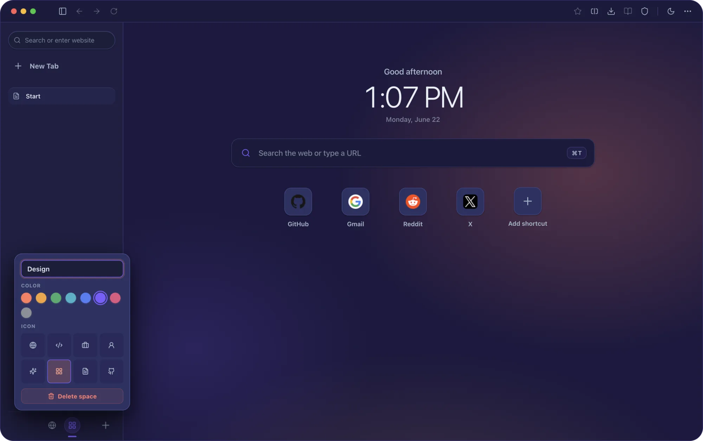
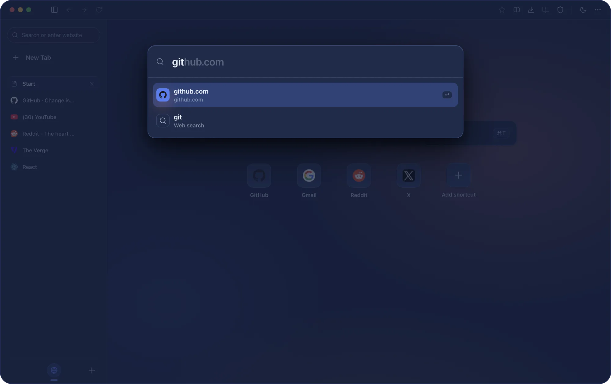
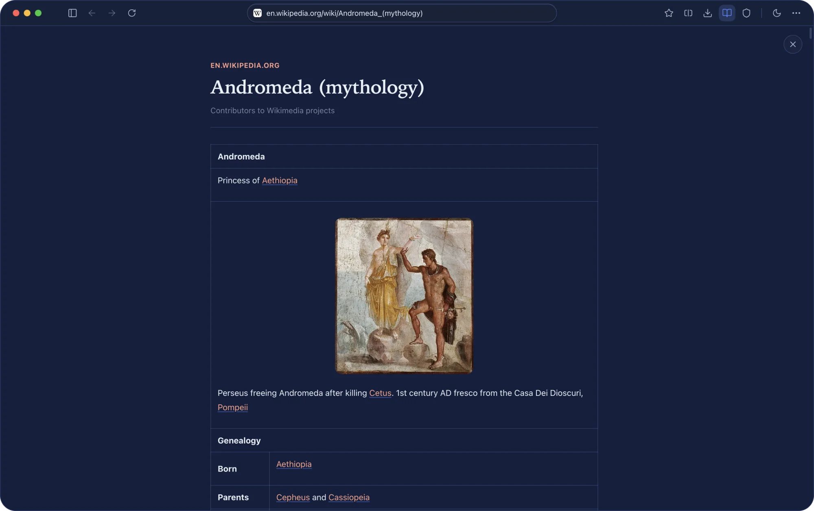
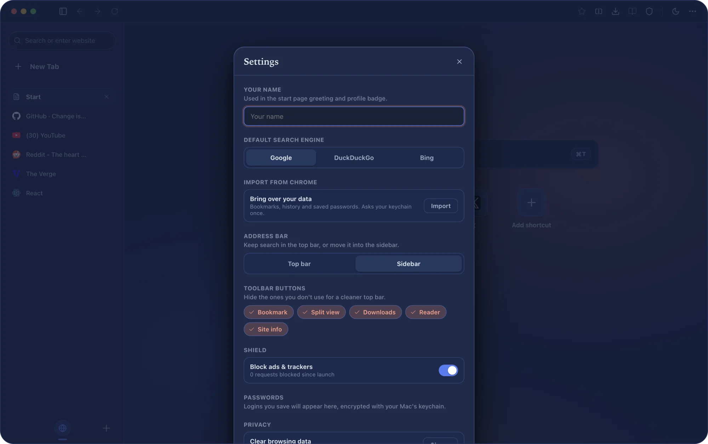
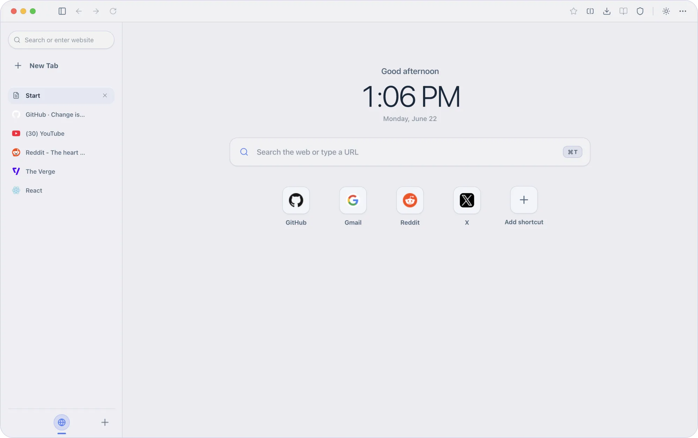

Most blockers hide ads after the page already fetched them. Andromeda
declines the request itself — EasyList and EasyPrivacy at the network
layer — so pages arrive lighter, faster, and quieter. Filters refresh
in the background; nothing about you ever leaves the Mac.
Requests refused0and counting — cached offline, zero telemetry
A tour
Built for a quieter kind of focus.
01 Spaces
Every world gets its own weather.
Work, play, and the side project each live in their own Space, with their
own tabs and their own color — and the whole shell re-tints to match, down
to the last hairline. Pick a hue, pick an icon, swipe between them.

02 The launcher
One key reaches everything.
⌘K opens a list ranked by where you actually go — visits, typing, recency.
The address bar completes from the same memory, so the right tab is
always one keystroke away.

03 Reader
Every article, set like a book.
One key strips the chrome from any page and re-sets the words in a calm
serif column — the same parsing engine Firefox trusts, wearing far better
type. Links survive. Clutter doesn't.

04 Make it yours
Calm comes in your palette.
Name yourself, pick a search engine, hide the toolbar buttons you never
touch, and slide the address bar wherever your hands expect it. Three
appearances, one quiet temperament.

Day & night
Looks right at any hour.
Daybreak, Night, and a soft amber Glow. Andromeda follows
your Mac or holds whichever mood you set. Drag to see the sun go down.

NightDaybreak
And the rest
Small touches, all the way down.
Split view
Drag any tab onto the page for instant side-by-side. The divider remembers exactly where you like it.
⌘D
Tabs that nap
Idle tabs free their memory after an hour, then spring back the moment you return.
auto
Picture-in-picture
Switch tabs while a video plays and it floats out on its own, then settles home.
auto
Frecency omnibar
The bar learns the places you go and completes them before you finish typing.
⌘L
Real bookmarks & backups
Folders, a bookmarks bar, and one-tap export — your library is yours to keep, restore, and carry between Macs.
⌘⇧B
Tab search
Fly across every open tab, in every Space, from one fuzzy list.
⌘⇧A
Keyboard-first
Hands stay on the keys.
Every surface is reachable without the trackpad.
⌘KCommand bar — search history or type a URL
⌘TNew tab
⌘⇧ASearch open tabs across every Space
⌘⇧RReader mode
⌘DSplit view
⌘YHistory
⌘⇧BBookmarks
⌘1–9Jump straight to a tab
⌘⇧TReopen the tab you just closed
⌘⇧DAdd bookmark
Free · macOS 14+ · Apple Silicon
Ready when you are.
Download the 0.3.0 disk image, drag Andromeda into Applications, and the twenty-second setup takes it from there.
Andromeda isn't signed with an Apple Developer certificate yet, so macOS asks
once before the first open. On macOS 15+: open the app, dismiss the
warning, then System Settings → Privacy & Security → Open Anyway. On
macOS 14 and older: right-click the app → Open. After that it
opens like any other app.